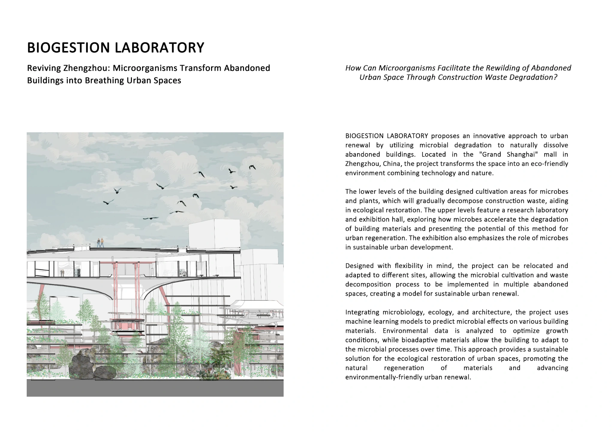
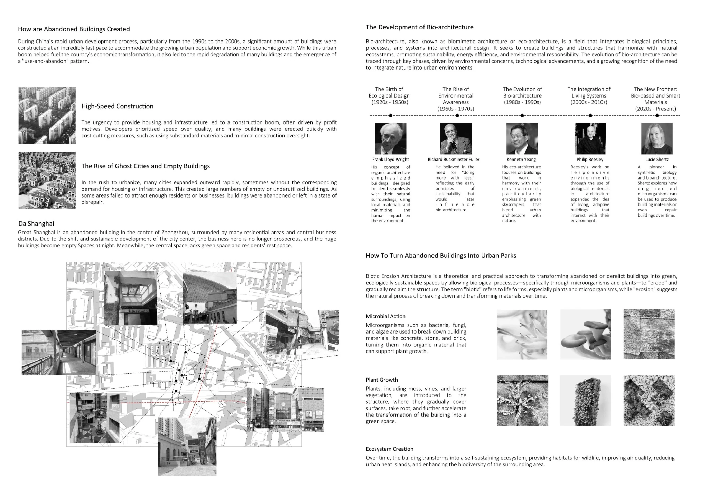
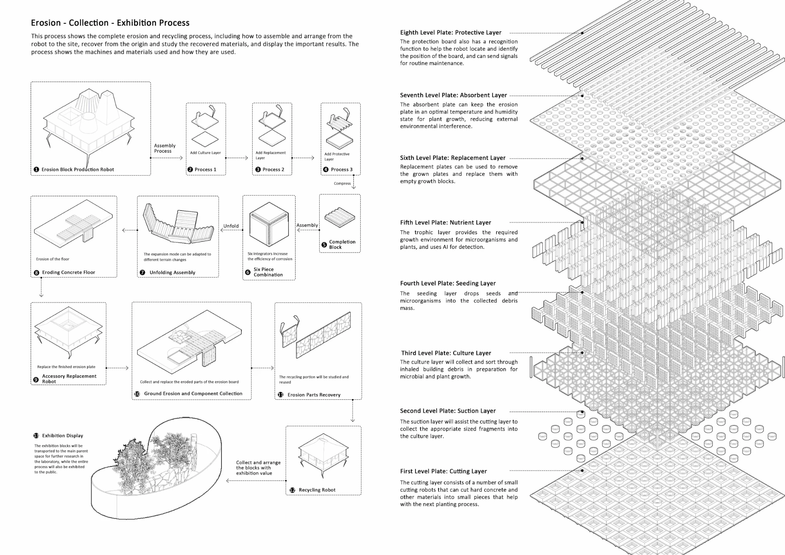
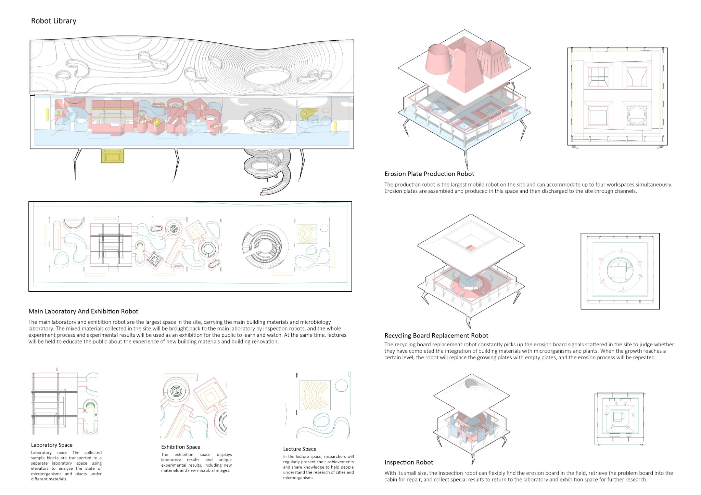
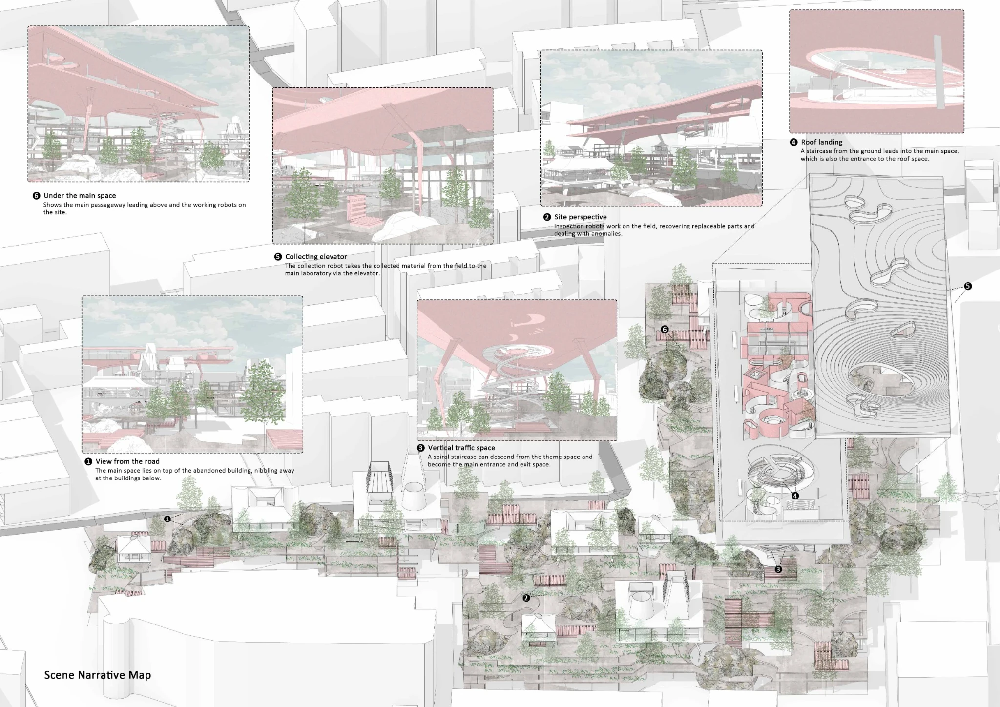

Previous speculative architecture · Emerging technologies
Biogestion Laboratory
Microbial processes, robotics and urban ecological transformation
A design proposal for the Grand Shanghai site in Zhengzhou, combining microbial cultivation, responsive materials and robotic processes to explore new forms of urban regeneration.
Project overview

The proposal explores how abandoned building fabric might be gradually transformed into an ecological public space. Microbial processes, robotic maintenance and new planting are combined in a speculative architectural system.
Selected research and design drawings



